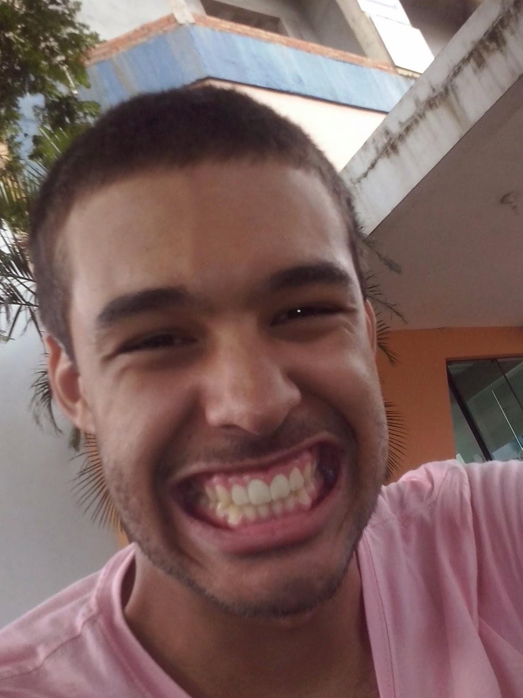
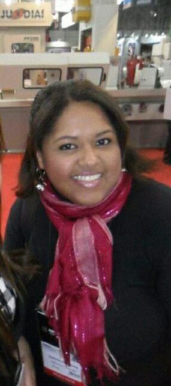
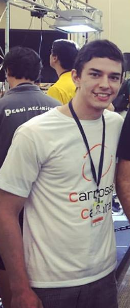
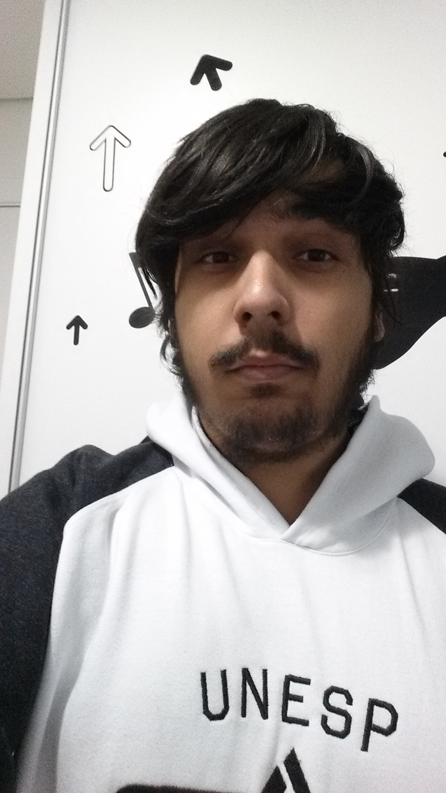
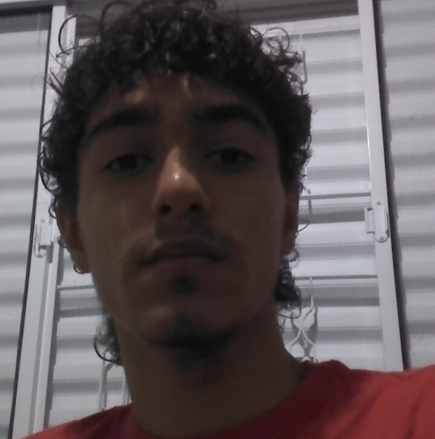

Nossa Equipe
-

Danilo
Desenvolvedor -

Carla
Gestão -

Everton
Desenvolvedor -
 Thiago
Thiago
Hardware -

Rodrigo
Desenvolvedor -

Luis
Desenvolvedor -
 Marcelo
Marcelo
Desenvolvedor
O time
A equipe de robótica Carrossel Caipira da UNESP-Bauru tem um importante papel na categoria VSS (Very Small Size) de futebol de robôs devido aos títulos conquistados, como o vice-campeonato da primeira competição da categoria em 1998, garantindo a vaga para disputar o campeonato mundial do mesmo ano na França. A partir de uma parceria entre POLI-USP e Carrossel Caipira, o time conhecido como Guaraná sagrou-se vice-campeão dessa edição. Nos anos seguintes, a equipe foi campeã no VI SBAI (Simpósio Brasileiro de Automação Inteligente) em 2003 e no VII SBAI em 2005.
Danilo
Danilo Weber Nunes está cursando o segundo ano de ciência da computação e é estreante no Carrossel Caipira.Integrante da equipe de software do time, atualmente está trabalhando na área do controle dos robôs junto a esse que vos fala (esse é você Doreto hahahaahha) lutando para que os robôs realizem os movimentos da maneira mais precisa possível.
Carla
Carla é bacharel em Engenharia de Controle de Automação pela Unip e atualmente é aluna do 2° ano de Física da Unesp/Bauru. Novata na Equipe Carrossel Caipira é atuante no Time Gestão com o propósito de divulgar a equipe e buscar parcerias. Seu lema de vida é "... preferir a derrota prévia a dúvida da vitória, é desperdiçar a oportunidade de merecer".
Everton
Everton Kelvin Francisco está cursando o último ano de Sistemas de Informação e está em seu terceiro ano de participação no Carrossel Caipira. É técnico em Automação Industrial, o que o levou a iniciar seus trabalhos colaborando com a área de hardware para construir os robôs, desde então se empenha em busca do crescimento e sucesso do Carrossel. Atualmente gerencia toda a equipe e desenvolve o novo simulador para o time de futebol de robôs. Confia na competência dos integrantes e acredita que o talento de cada membro contribuindo para o interesse coletivo trará muitas conquistas para o time.
Thiago
Thiago Mochetti cursa eletrônica pelo colégio técnico da Unesp/Bauru. Entrou no Carrossel Caipira em mais uma das obras do destino, mas mantém-se firme na área de hardware do projeto. É o integrante mais jovem da equipe e faz uso disso para descontrair e motivar o pessoal.
Rodrigo
Rodrigo Bueno Rodrigues é aluno do segundo ano de Ciências da Computação da Unesp/Bauru. Novo no time do Carrossel na parte de software, procura ter novas ideias e aprender novas técnicas para aprimorar o time, e acredita que a contribuição e parceria de todos no time trará progresso . Atualmente está trabalhando na área de controle onde procura uma nova forma de direcionar os robôs para chute a gol.
Luis
Luis Uzai é aluno do segundo ano de Ciência da Computação da Unesp/Bauru. Entrou esse ano no time do Carrossel Caipira na parte de software. Hoje em dia está apenas ajudando no desenvolvimento do site da equipe e está disposto a ajudar em qualquer lugar que a equipe precisar. Ele também vai ajudar a promover a equipe entre as escolas públicas de Bauru, para mostrar o nosso trabalho para a sociedade, acreditando que a robótica é essencial para o futuro da sociedade.